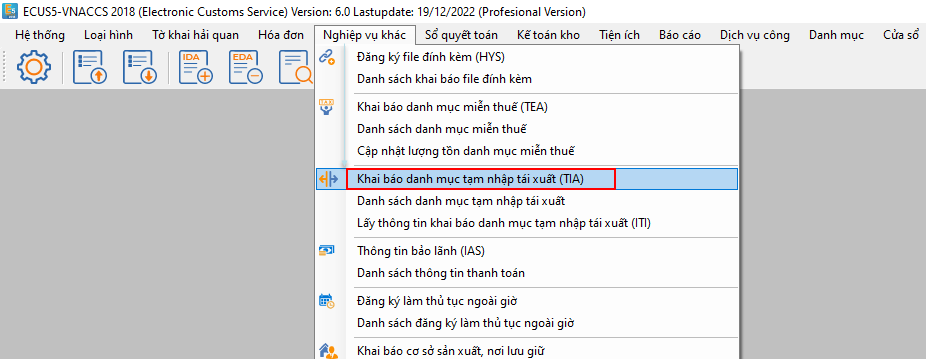
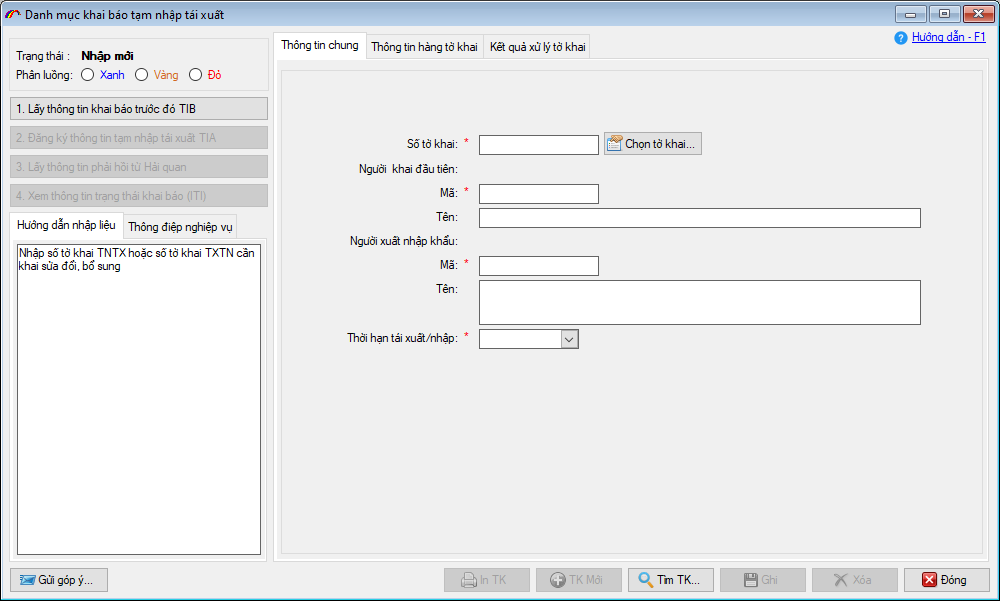
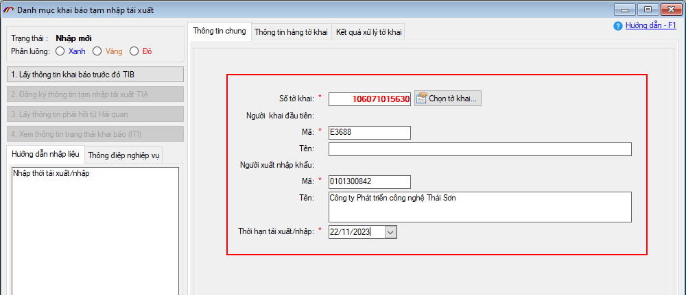
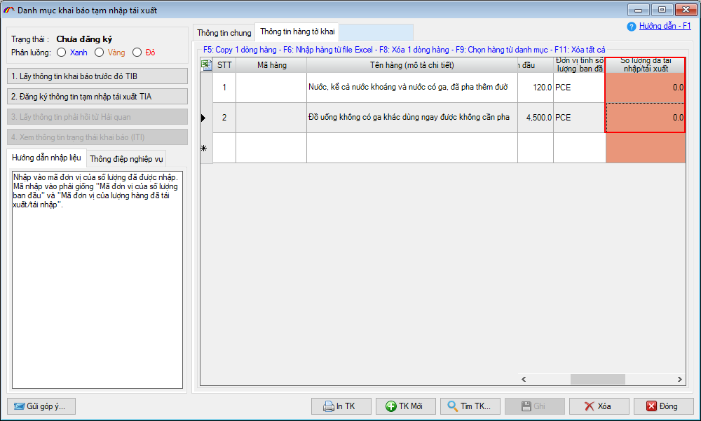
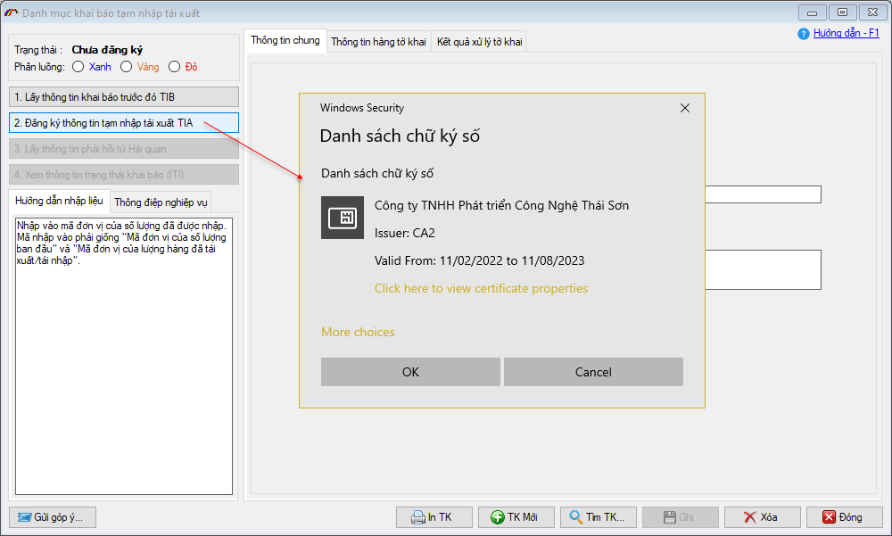
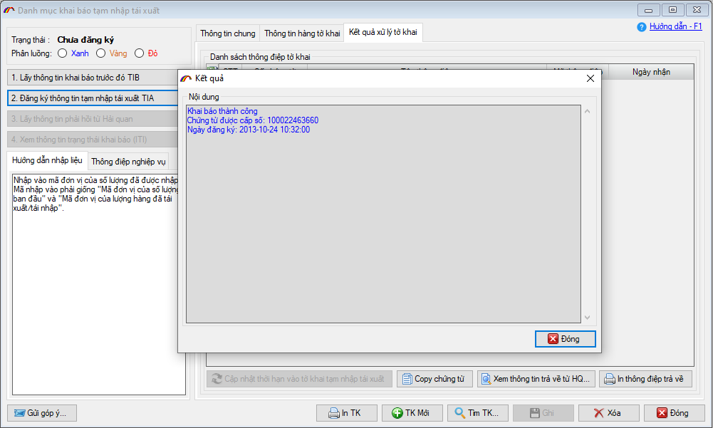
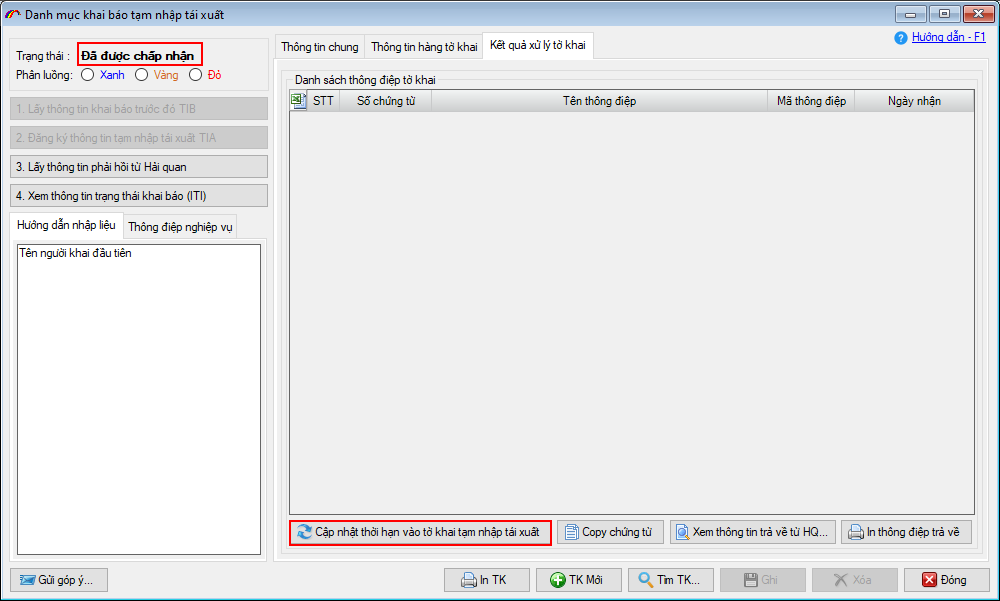

SỬA THÔNG TIN HÀNG HÓA TẠM NHẬP TÁI XUẤT - TIA
Khi cần thay đổi thông tin cho tờ khai TNTX ban đầu, doanh nghiệp sẽ phải sử dụng nghiệp vụ TIA - sửa thông tin hàng tạm nhập tái xuất để khai báo với cơ quan Hải quan. Các trường hợp cần thay đổi như:
- Gia hạn thời hạn tạm nhập tái xuất.
- Thay đổi thông tin số lượng hàng hóa TNTX (ví dụ, doanh nghiệp đã mở tờ khai xuất khẩu để tái xuất nhưng sau đó tờ khai xuất bị hủy do sai thông tin. Lúc này, doanh nghiệp cần khai sửa thông tin hàng TNTX bằng nghiệp vụ TIA để cập nhật lại số lượng đã bị trừ (khi mở tờ khai xuất))
Để thực hiện, doanh nghiệp truy cập vào menu Nghiệp vụ khác / Khai báo danh mục tạm nhập tái xuất (TIA):

Màn hình chức năng hiện ra như sau:

Tại tab Thông tin chung
- Số tờ khai: Bạn nhấn nút Chọn tờ khai... để tìm và chọn đến số tờ khai TNTX đang cần sửa thông tin.
- Thông tin người khai đầu tiên: Đây là thông tin về tài khoản khai báo VNACCS (5 kí tự đầu trong tài khoản khai báo VNACCS) đã thực hiện khai báo tờ khai TNTX. Ví dụ, tài khoản khai báo là E3688002 thì ở ô Mã, bạn nhập là: E3688
- Người xuất nhập khẩu: Bạn nhập vào MST, Tên đơn vị xuất nhập khẩu (trên tờ khai TNTX).
- Thời hạn tái xuất/nhập: Nhập vào ngày gia hạn mới cho tờ khai TNTX (trong trường hợp cần gia hạn) hoặc nhập vào ngày hạn TNTX đã đăng ký trên tờ khai (trường hợp chỉ sửa thông tin hàng).

Tại tab Thông tin hàng tờ khai
Khi chọn tờ khai, phần mềm đã tự động lấy danh sách hàng của tờ khai để đưa vào, bạn chỉ cần nhập thông tin cho chỉ tiêu Số lượng đã tái nhập/ tái xuất

Sau khi nhập xong thông tin và ghi lại, bạn tiến hành khai báo bằng cách nhấn vào nút Đăng ký thông tin tạm nhập tái xuất TIA (lưu ý, chữ ký số đã phải được cắm vào máy tính khai báo)

Thành công, hệ thống sẽ trả về số khai báo như sau:

Doanh nghiệp chờ phía cơ quan Hải quan duyệt chấp nhận bản khai và lấy phản hồi để nhận kết quả trả về. Khi nhận được thông điệp Bản xác nhận đã đăng ký thông tin quản lý hàng tạm nhập tái xuất/ tạm xuất tái nhập - VAL813 là việc khai sửa hoàn tất.
Lúc này doanh đã có thể thực hiển mở tờ khai nhập/xuất để tái xuất/ tái nhập bình thường. Đồng thời, để cập nhật ngày gia hạn mới (trường hợp sửa gia hạn) cho tờ khai TNTX gốc, bạn vào tab Kết quả xử lý và nhấn vào nút Cập nhật thời hạn vào tờ khai tạm nhập tái xuất

Bản quyền © thuộc về Công ty TNHH Phát triển công nghệ Thái Sơn